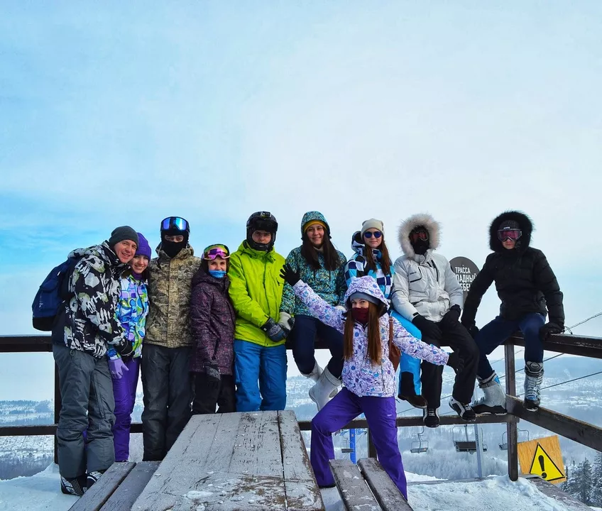

О нас
Туроператор «Байкальская Виза Тур» входит в состав Ассоциации «Байкальская Виза», созданной в 2005 году и объединившей 4 отеля, 11 ресторанов, теплоходы класса комфорт и ВИП-класса. Турфирма открыла свои двери в 2007 году. А с 2017 года новое имя компании - Байкальская Виза Тур.
Воплощая задуманное...
.webp) За 13 лет присутствия
на рынке мы успели
завоевать лидирующую позицию в сфере приема и организации отдыха на Байкале.
За 13 лет присутствия
на рынке мы успели
завоевать лидирующую позицию в сфере приема и организации отдыха на Байкале.
Собственная инфраструктура и транспорт помогают нам оперативно решать вопросы с размещением
и транспортировкой гостей, а опыт нашей большой команды позволяет создавать уникальные туры
и экспедиции по самым отдаленным и неизведанным местам Байкала.
Мы очень любим и самое главное, уважаем Байкал, его чистоту и первозданность.
Покоряя воды Байкала, наши капитаны, суммарно, уже несколько раз обогнули Землю по экватору,
и каждый залив и бухта озера для них, как стены родного дома – знакомы и понятны в любую
погоду. Безопасность туристов для нас самое главное.
Любимое дело - как образ жизни...
Все наши менеджеры,
гиды, инструктора, экспедиторы имеют дипломы и удостоверения в сфере туризма. Мы тестируем
свои туры на себе. Сотрудники отлично знают предлагаемый турпродукт: купались в теплых
заливах Малого Моря, гуляли по старинным тоннелям Кругобайкальской железной дороги,
любовались восходом у подножия сакральной скалы Шаманки, катались на хаски по таёжным тропам
Листвянки. Мы танцевали и проводили обряды с Байкальскими шаманами, наслаждались красотой
скалистых берегов Северного Байкала, фотографировались с редкими и умными нерпами, готовили
на костре нежного омуля… и это далеко не весь список.
Мы — дружный коллектив, где каждый любит свою работу, любит Байкал и готов поделиться
частичкой этого прекрасного места с другими!